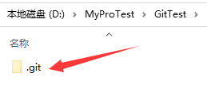

-
什么是 Git ?
Git 是一个开源的分布式版本控制系统，用于敏捷高效地处理任何或小或大的项目。 Git 是 Linus Torvalds 为了帮助管理 Linux 内核开发而开发的一个开放源码的版本控制软件。[摘自网络]
-
Git Bash 的下载和安装
Git Bash软件直接在官网下载就可以了，官网：git-scm.com。 如下图所示，点击下载Windows最新版本即可。
下载好之后，你会得到一个类似这样的Git安装可执行文件。双击运行，除了在选择安装路径的时候根据自己需要更改下，其它步骤直接点击next就可以了。
安装好之后，在 Windows 的 cmd 命令窗口中输入：
git --version后回车，出现git版本号即表示安装成功。其实不用上述这样确认也可以的。在安装好之后，桌面一般会生成 Git 的快捷方式。双击能运行就可以了。
-
Git 命令
讲解Git操作命令，我不打算直接单独来讲解命令，原因有二，其一、我自己学习的时候，感觉单独学习命令不仅枯燥而且掌握不牢。借助实际操作学习才最有效。其二、我本身也是菜鸟，单独讲解不实际。 下面就借助实际项目“如何将本地web文件上传到Github”来进行命令讲解。
-
在Github上创建一个存放web文件的仓库
-> 要想创建仓库，你必须是注册了Github账号的。然后在自己主页上点击 New 创建仓库。我的注册的账号是 fy2000。
-> 填写新建仓库信息，最后创建仓库。这里我的仓库起名为 mytest 。
-> 创建后的 mytest 仓库显示如下。
-
上传本地web工程文件到 mytest 远程仓库
-
本地web工程文件介绍
首先，我们的web工程项目是一个淘宝的静态网页。文件目录是 D:\MyProTest\html\HBuilderProjects\taobao\
-
新建本地仓库目录
在自己本地新建一个文件夹，作为本地库目录。或者直接使用web工程文件夹作为本地仓库目录。我新建的文件夹为GitTest，目录：D:\MyProTest\GitTest\ 。
-
初始化本地仓库
打开新建的 GitTest 目录，此时为空，在空白处右键，选择 Git bash here，此时就会打开 Git bash 命令窗口，并且目录定位到你的 GitTest 目录。
运行命令 git init 回车，此时就初始化了你的本地仓库 GitTest，你会看到在此文件夹下出现了一个 .git 的文件夹。
 -
获取远程库 mytest 的远程链接地址
在Github上的 mytest 仓库页面选择 Code 按钮，在弹出的选项卡中选择协议 SSH ，然后下面出现的 git@github.com:fy2000/mytest.git 就是远程访问链接。
-
将本地库和远程库 mytest 关联
关联远程库命令-> git remote add origin remote_path ，remote_path 为远程库访问链接。
运行命令：git remote add origin git@github.com:fy2000/mytest.git ，此时会在本地库文件夹GitTest中的.git/config文件中添加远程库记录。
-
将本地web项目文件加载到本地缓存区
待上传的文件必须在当前使用的仓库里面，即在仓库目录下面。首先将淘宝web项目文件复制到本地仓库 GitTest 下面。
命令：git add project_path ，将web工程文件加入本地缓存区， project_path 为待上传的文件目录。
例如我要将淘宝文件加入缓存区的话需要执行命令：git add ./taobao/ ，这里使用相对路径是因为我当前所在的目录为 GitTest 目录下
-
将缓存区中的文件上传到本地仓库 GitTest
命令：git commit -m "本次操作的描述"，此命令可以将缓存区文件上传到本地仓库。入下图为成功上传。
-
将本地仓库的淘宝web工程同步到远程仓库 mytest 中
命令：git push -u origin master -f，推送到git服务端，加-f则进行覆盖，不加则不覆盖
此时如果没有在 Github 上添加过 ssh key 的话，会报错。因为你虽然有了远程仓库的地址，但是你没有ssh key，你就没有权限访问。如下图
-
创建 SSH Key
配置一个本地 git 的用户名，命令：git config --global user.name "github账户名"
配置一个本地 git 的邮箱地址，命令：git config --global user.email "对应的邮箱地址"
生成SSH Key ，命令： ssh-keygen -t rsa -C "上面对应的邮箱地址"

-
将生成的公式添加到 Github 账户中
找到公匙所在文件，是一个 id_rsa.pub 名字的文件，上图中有提到，打开后全部复制里面的字符串内容。 然后打开Github账户主页，点击 头像图标到设置界面，将复制的 ssh key 添加到里面即可。
到这里就添加好了ssh key。接下来就可以上传了。
-
重新同步本地库的淘宝web项目到远程 mytest 仓库中
执行命令：git push -u origin master，此时就可以顺利上传了。
-
在 Github 上确认是否上传成功
登陆自己的 Github 账户页面，打开 mytest 仓库，查看是否有自己的淘宝web项目文件。如果有，就上传成功了。
-
-
-
如何远程访问自己上传的项目网页
-
从 GitHub 更新代码到本地仓库
使用命令：git pull origin master 即可更新了
-
结束语
兴趣是学习的动力，保持广泛的兴趣，带上火热的激情，整装再出发。